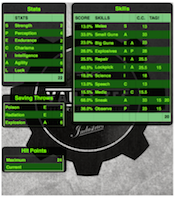
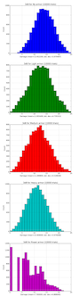

Background
I run multiple pen-and-paper role-playing games (henceforth, RPGS).
Earlier this year, I wrapped up a game for my face-to-face St. Louis group.

They said that they would like to play something like Fallout next.
After kicking around some options, we decided, why not just play a Fallout RPG? It's not like I'm going to try to sell it.
- At least not without filing off the serial numbers.
What's an RPG? (obligatory slide)
Really? Is there anyone here who actually needs me to tell you this? 
You should read Jon Peterson's Playing At The World anyway. You will learn new things.
Quick history:
- Braunstein
- Dungeons and Dragons

- The 80s, pop phenomenon, Satanic Panic, and backlash
- Early CRPGs
- Crash (analogous to Video Game Crash of '84)
- Mainstreaming of nerdiness
- OSR/DIY
Computer RPGs
We didn't always have free worldwide videoconferencing, you know. 
Especially in small towns it could be hard to find a game.
Computer games were the next best thing.
- Zork, Scott Adams, Infocom
- Rogue, Wizardry, Ultima, et cetera
- These diverged by the late 80s into "Adventure" and "CRPG" genres
Fallout

Does anyone here need this slide either?
Spiritual successor of Wasteland (EA, 1988)
Fallout: 1997 
Fallout 2: 1998
Fallout 3-New Vegas-4
 The Fallout I'm basing my game on is the set of more recent
3D Fallout games: Fallout 3 (2008), Fallout: New Vegas (2010),
Fallout 4 (2015).
The Fallout I'm basing my game on is the set of more recent
3D Fallout games: Fallout 3 (2008), Fallout: New Vegas (2010),
Fallout 4 (2015).

Post-apocalyptic retro-future: robots, tailfins, the Ink Spots.
Fallout As a Pen-and-Paper RPG
Back in the day, computer RPGs couldn't really have that much more math than actual RPGs.
Wasteland was designed by Ken St. Andre, Mike Stackpole, and Liz Danforth.
- They wrote Tunnels and Trolls, an early D&D competitor (and still being published today! 7th edition now).
- Wasteland used a variant of T&T
Fallout was going to use GURPS by Steve Jackson Games but negotiations collapsed.
So it uses its own system.
Fallout's SPECIAL System
7 statistics: Strength, Perception, Endurance, Charisma, Intelligence, Agility, Luck.
Some number of skills, whose base chance is derived from statistics, and which can improve over time. These have generally been percentile-based, although sometimes the cap has been 200% (don't think too hard about that).
At a glance, it's a lot like Chaosium's Basic Role-Playing (better known to most people via Call of Cthulhu) with the stats halved.
Why not use an existing system?
How about GURPS, as originally intended? 
- Way too much crunch for my current tastes.
- Too much work needed to turn d10 stats/percentile skills into 3d6-everything.
Why not use BRP, only divide the stats by two and then the roll-under-stat-times-five becomes roll-under-stat-times-ten?
- Wanted to do a point-buy system for stats like the video games have.
- By the time I came up with the right skill list, it'd be pretty much like writing my own system anyway.
- But I (spoiler) ended up close to here anyway.
Other Existing Systems
Jason Mical has already done a Fallout PnP game:
- 3.0 (WIP): http://falloutpnp.wikia.com/wiki/Main_Page
- 2.0: http://www.fallout.ru/projects/pnp/fallout_pnp_2.0.pdf
- Basically for Fallout 1 and 2 era, not 3-NV-4.
- Also too crunchy.
 Gamma World or Mutant Future or (when it's out)
Mutant Crawl Classics.
Gamma World or Mutant Future or (when it's out)
Mutant Crawl Classics.
- All farther future and essentially weirder than Fallout.
- Fallout is sometimes silly but not gonzo.
Twilight 2000 or Aftermath!
- Too soon after the apocalypse, too grim, too crunchy.
What Makes Fallout Feel Like Fallout ?
SPECIAL stats, percentile skills, radiation damage, tactical combat.
Exploration is a main focus.
Resource management, particularly in the early game.
- There are never enough bullets.
- Food and water heal you but also give you radiation.
Several opposed factions, between whose plot arcs and philosophies you have to choose.
- There is a main-story plot, although you can ignore it.
- Several medium-scale plot arcs tangentially connected to main arc.
Initial Design
https://github.com/athornton/rpgexperiments/tree/master/Fallout
Point-buy system to give everyone equal starting power. 
Radiation works like it does in Fallout 4 by reducing maximum hit points.
SPECIAL: 1-10.
Percentile skills.
Fast level advancement.
Off-the-bat Simplifications
Some things that are fine in a video game, where the computer is doing the math, are not fine at a table:
- No separate armor for different body locations.
- No separate ballistic/energy/radiation armor protection.
- Simplified called shot rules and mechanical effects.
- Pip-Boy aiming is like a scope, not like special slow-time minigame.
- Alternatively, all combat plays like VATS combat.
First-Session Tweaks
Initially armor blocked a percentage of damage, depending on type.
- Turns out I have a math-challenged player.
- So I thought I'd try a model where armor of a certain type enables you to ignore any damage dice that come up with a certain value.
- Only this would take a long time to balance and playtest...
- ...unless I simulated it.
Fallout Armor Simulator
https://github.com/athornton/rpgexperiments/tree/master/Fallout/FalloutArmor 
It's a Python class and a harness for running many simulations and seeing what the armor does.
Didn't take very long, and gave what seemed like reasonable results.
Damage roll: 3d8 (10000 trials) No armor : m 13.45220; sd 3.97949 Light armor (blocks [4]) : m 11.95540; sd 4.73532 Medium armor (blocks [6]) : m 11.28980; sd 4.52805 Heavy armor (blocks [8]) : m 10.40900; sd 3.97607 Power armor (blocks [1, 2, 4, 8]) : m 7.76000; sd 4.88864
Second Session
Fighting a few Mole Rats took forever and was kind of boring.
- Well, OK, melee combat should get the same bonus that point-blank missile combat does...
- And enemies should have to check morale...
- But it felt like those mole rats were damage sponges. I should simulate some battles so I can get their skills, armor, damage, and hit points right, shouldn't I?
- I mean, the armor was pretty easy, so why shouldn't this be?
Implementing a Battle Simulator
So, I need an Actor class. It has hit points and armor.
And it's got SPECIAL stats and skills...
And it has weapons....
Weapons may have ammo and ranges...
And splash damage...
And I need a class to roll dice and calculate damage...
Oh dear. Damage comes in (at least) physical, burn, poison, and radiation variants...
The actor is at particular coordinates in a space, which we will call an arena...
And it needs a strategy for what it's going to do each turn...
A Roguelike
And before I knew it, I'd implemented, basically, the core of a
roguelike. 
Just to get two raiders fighting each other needed all of the above, plus motion rules, plus morale, plus a turn sequencer, plus choosing weapons, plus a faction system...
A General Battle Simulator
Fortunately, once I had the core turn sequence worked out, and actors and weapons up and running, it was pretty straightforward to create a catalogue of world objects (armor, weapons, ammo, creatures, etc.) and pit actors against one another.
Sgt. Gutsy #1 turn phase act: Sgt. Gutsy #1 chose weapon laser rifle to attack Mirelurk Killclaw. Sgt. Gutsy #1: phase act; target is Mirelurk Killclaw; action is attack Sgt. Gutsy #1 attacked Mirelurk Killclaw with laser rifle. Sgt. Gutsy #1 [22] did 7 damage to Mirelurk Killclaw [-5] Attack (needed <= 56; rolled 47) hit: d10 -> 6 Turn done for Sgt. Gutsy #1. Mirelurk Killclaw is dead; removing from arena Gutsies vs. Killclaw. Victors (22 turns): Sgt. Gutsy #1; HP: 22/70/70 Armor: heavy armor (heavy): blocks 8
Multiple Trials
And from there it wasn't all that hard to wrap a single battle in a loop and then plot some statistics for the battles.
Mutants (melee x 2, ranged x 2, overlord) vs. Deathclaw: results of 300 trials: Average battle length: 17.73 turns. Super Mutant Overlord survived 53.00%. If surviving, 70.99% HP left. Deathclaw survived 46.67%. If surviving, 20.69% HP left. Super Mutant (Ranged) #1 survived 17.00%. If surviving, 72.00% HP left. Super Mutant (Ranged) #2 survived 11.33%. If surviving, 76.35% HP left. Super Mutant (Melee) #1 survived 4.00%. If surviving, 78.00% HP left.

The Simulator
You can find the simulator at: https://github.com/athornton/rpgexperiments/tree/master/Fallout/FalloutBattle/FalloutSimulator
The actual run-the-battle code is: https://github.com/athornton/rpgexperiments/tree/master/Fallout/FalloutBattle
I hope to add more stuff to the catalog, tweak some of the values for things, and eventually implement things like splash damage on misses.
Please feel free to play with it. Pull requests will be considered, though I won't guarantee adoption.
And Finally...
That gave me the data I needed to figure out how many hit points to give enemies, what skills they should have on their attacks and what damage those attacks should do, and so forth.
So: I've created a simplistic roguelike-video-game event loop in order
to simulate a set of pen-and-paper RPG rules I wrote, in order to
emulate a video game, so that my players have more fun. 
...and you can too!
Because war, war never changes.